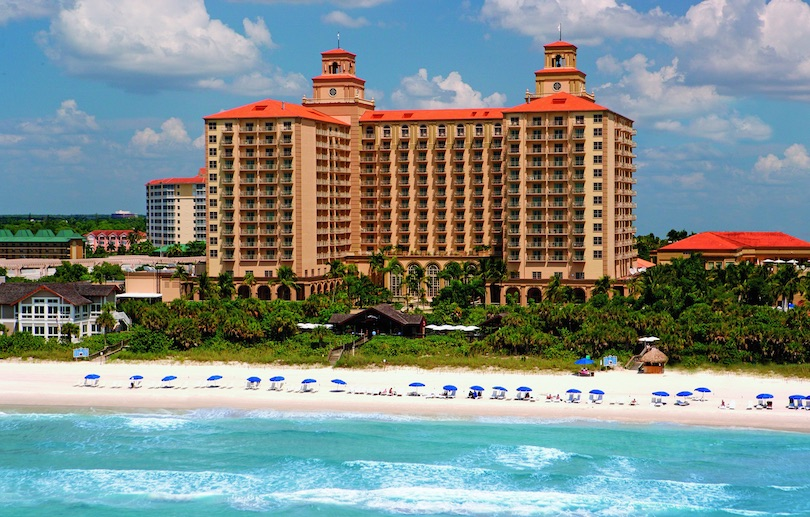
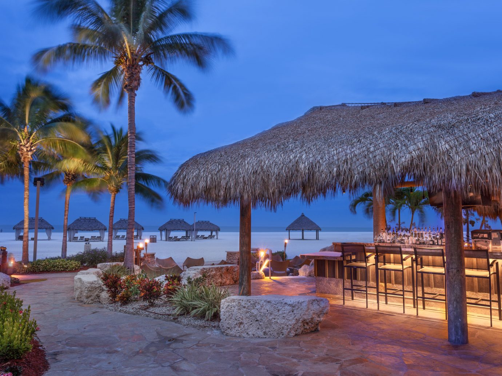

Staying at a hotel? There are spas, restaurants, and even private beach access. There are plenty of places to stay while you take your vacation including private cottages and villas away from the public areas. Still have some of the same amenities as a resort but more spacious. If you are looking for a place to stay with a large group of people, private housing would be your best bet. The resort would be recommended if you are only looking for a place to stay for a few days on a family vacation. Florida has many popular dishes but fortunately, everyone can enjoy Florida's famous seafood specialties like fried grouper sandwiches and Minorcan clam chowder. Foods like key lime pie and sour orange pie have been due to the state's numerous amounts of subtropical vegetables. Foods like the Cuban sandwich and Bahamian conch fritters reflect Florida's culture.
 